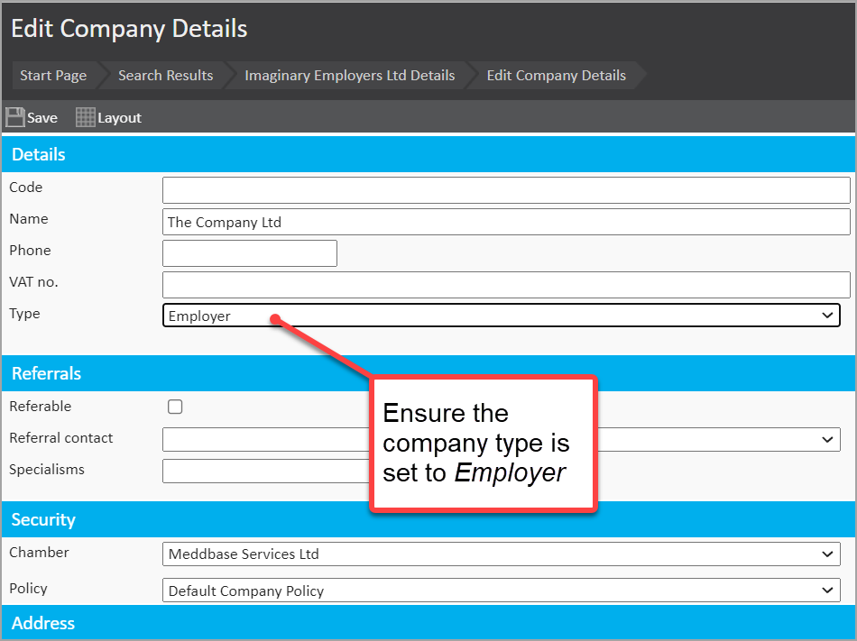
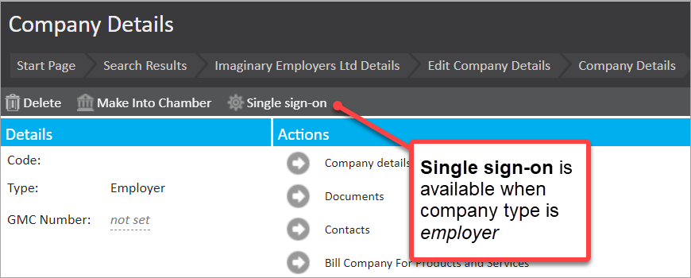
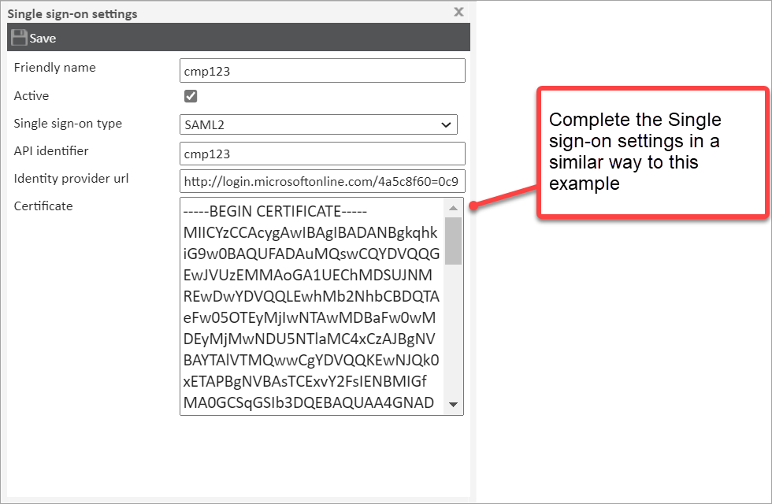
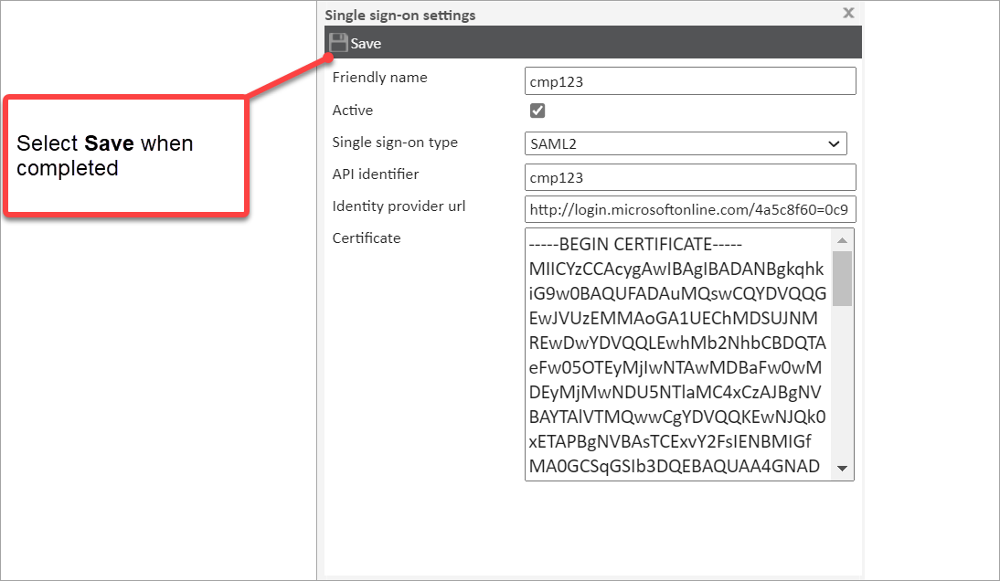

Meddbase supports the setup of Single sign-on or ‘SSO’ specifically using SAML2 protocol. This enables a company's authorised managers to access the Occupational Health portal via SSO.
This article covers the following:
To use this article and undertake configuration, you need a good working knowledge of SAML 2.0.
The SSO is set up against individual employer companies rather than at the chamber level. A unique identifier is used per employer company to identify the company at the portal end.
This unique identifier is configured at the identity provider end as well and set as a 'cookie' on the portal to identify the SSO configuration to be used.
A sign in request from the external identity provider is received at the Meddbase system site. This is validated against the identity provider certificate. The user is matched using an email claim from the identity provider against the local email ("work email" field on manager's record) for the user profile. If this is successful, it generates a URL with a short-lived login token pointing to the portal configured for the chamber.
The portal login then uses the authentication token with a 'direct-login' API call which logs in the user to the employer's OH portal.
1. As of the time of writing, SSO has been tested and implemented against Azure AD Identity provider.
2. Single sign-out is not supported.
3. Any subsequent attempt to access the OH Portal will take the user directly to the identity provider URL, where the user can log in (if they don't already have a logged in session).
4. The SSO can also be IdP-initiated.
There is a range of actions for configuration that need to take place. These actions and the role of the user are outlined in the table below.
The tasks that need to be carried out by the IT Administrator of the employer organisation (i.e. the client), are highlighted with a light-grey row colour.
| Task No. | Task description | Who for? |
| Task 1 | Find the API Domain key from Meddbase and share with the employer organisation. | Meddbase user with admin permissions |
| Task 2 | Provide the employer organization with the designated Login URL. This URL serves as an alternative login option for managers, bypassing the need to use Microsoft 365's 'My Apps'. | Meddbase user with admin permissions |
| Task 3 | Carry out Azure AD setup for Single sign-on. | IT Administrator of employer organisation (the client) |
| Task 4 | Provide Meddbase IT Administrator with Base64 Certificate and SAML Single sign-On Service URL. | IT Administrator of employer organisation (the client) |
| Task 5 | Enable the Single sign-on System feature for the Meddbase chamber. | Meddbase user with admin permissions |
| Task 6 | Ensure the company type set to 'Employer' (i.e. the employer organisation). | Meddbase user with admin permissions |
| Task 7 | Set Single sign-on settings for the company (i.e. the employer organisation). | Meddbase user with admin permissions |
Guidance on how to carry out these tasks is outlined below.
To find the API domain key:
The format of the Login URL, depending on your locale, is:
The above URLs are what Managers will need to log into the OH Portal, or they can access from Azure My Apps.
Please see Task 1 above for information on API domain key.
Please see Task 7 for information on API Identifier.
This task is the responsibility of the IT Administrator for the employer organisation; namely, the employer of Manager's on the OH Portal.
Further documentation on this process for setting up a non-gallery application in Azure for Single sign-on is available on the following link - Single sign-On SAML protocol.
The following configuration is important and outlined below.
| Item | Configuration |
| Single sign-on Mode | SAML-based sign-on |
| Identifier | API Domain Key (from Task 1 above) |
| Reply URL (Assertion Consumer Service URL) | https://login.meddbase.com/ssoapi http://us-login.meddbase.com/ssoapi http://eu-login.meddbase.com/ssoapi https://ukhs-portal.meddbase.com/ssoapi https://ca-portal.meddbase.com/ssoapi https://au-portal.meddbase.com/ssoapi |
| User Identifier | User.email |
| User Identifier (alternative) | http://schemas.xmlsoap.org/ws/2005/05/identity/claims/emailaddress |
The 'User Identifier' (alternative) noted in the table above is an XML namespace.
When the IT Administrator at the employer organisation has carried out their Azure setup, they will need to provide the Meddbase IT Administrator with the following information:
*This is the Logout URL found under step 4 of the SAML-based Sign-on in Azure.
This is needed to complete the configuration of SSO for the employer in Meddbase.
To do this:
Each employer that wants to use SSO must be set up in Meddbase as a company with the type of 'Employer'. To ensure this is set:

When the type value for the company is set to 'Employer', the Single sign-on option is visible.

Each company using Single sign-on will need their Single sign-on settings updated. This will need the login details employer's Azure information (the SAML Certificate in Base64 version noted in Task 4).
To do this:
1. Select the Single sign-on in the button bar for the employer record.
2. In the Single sign-on settings dialogue that appears, complete the field values referencing the guidance notes in the table below.
| Field | Guidance on what's needed |
| Friendly name | Input a readable and meaningful name value. |
| Active | Tick the check-box to activate the SSO for a particular company |
| Single sign-on type | Choose SAML2 from the drop-down list (currently the only option) |
| API Identifier | Input a unique identifier for the employer. It can be any alphanumeric string. This has to be unique between all the employers supporting Single sign-on for the chamber. This is different from the identifier required on Azure. The API identifier value will be used as part of the URL to access the portal. Please note! The individual employer's API identifier should not be the same as the chamber's Portal API key. You can think of it as a unique identifier for a specific employer. |
| Identity provider URL | The SAML Single sign-on Service URL value provided by the employer (noted in Task 4). |
| Certificate | Copy the contents of the Base 64 certificate provided by the employer (noted in Task 4) and paste into this field. |

3. Click Save

The Single sign-on setting is saved and the SSO process for the OH Portal for the specified employer is complete.